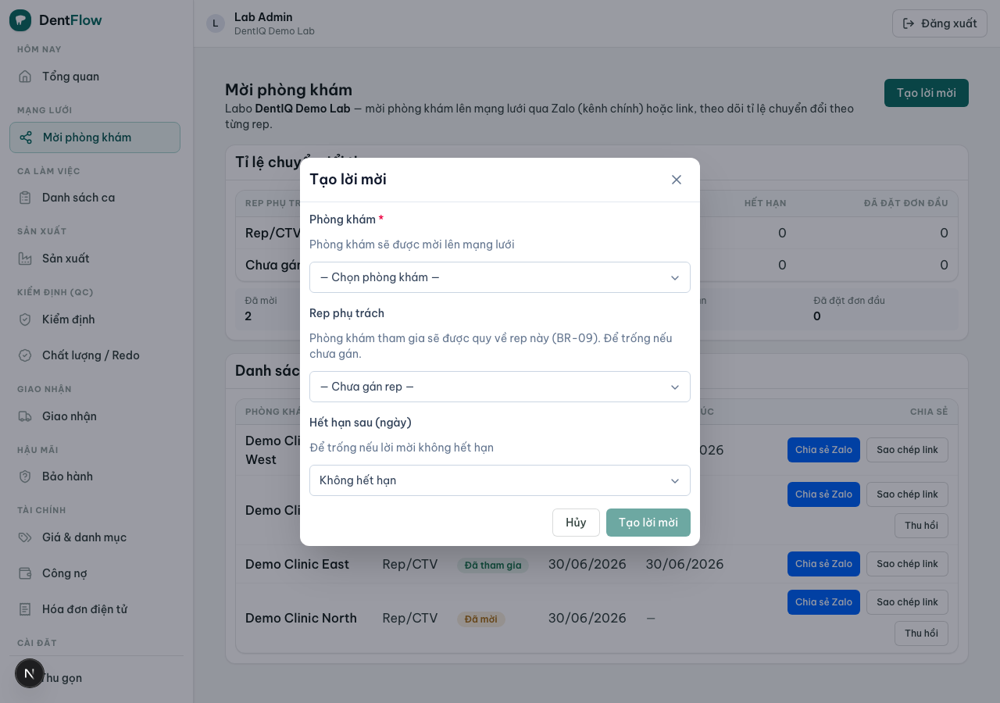
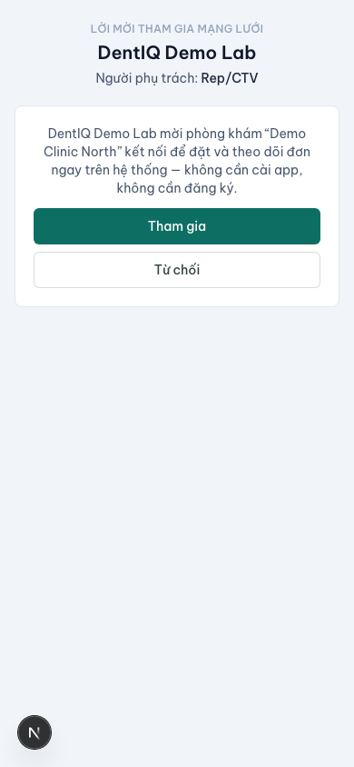

Mời phòng khám
Mạng lưới chỉ có giá trị khi đủ mật độ, nhưng không bên nào muốn vào trước. Lời giải là lab-first seeding: labo — bên trả tiền SaaS — chủ động mời chính tập phòng khám đã làm việc với mình lên hệ thống.
Tính năng cho phép một labo chủ động mời phòng khám của mình lên mạng lưới: tạo lời mời dưới dạng QR/link/Zalo, gắn phòng khám vào mạng lưới lab↔clinic, và theo dõi xem phòng khám đã tham gia chưa. Phòng khám nhận lời mời có thể đặt đơn ngay mà không cần cài app. Đây là cách biến quan hệ ngoài đời (Zalo, điện thoại) thành một cạnh trong mạng lưới.

Vì sao lab mời trước
Rủi ro số một của cả dự án là two-sided cold-start: cả labo lẫn phòng khám đều không muốn là bên vào hệ thống trước. Vì labo là bên trả tiền SaaS và đã có sẵn tập phòng khám đối tác, họ là bên tự nhiên để khởi động mạng lưới. Mỗi phòng khám được mời gắn với đúng rep (TDV/CTV) đã chăm sóc nó — hệ thống không cắt cầu quan hệ rep–phòng khám mà tôn trọng nó.
Thực tế VN: labo không "đi viral" — họ giành và giữ phòng khám qua rep, quan hệ một-đối-một, dựa trên niềm tin và Zalo. Vì vậy tăng trưởng ở đây là từng quan hệ một, chậm — đúng bản chất lab-first seeding, không phải phép màu lan truyền.
Tạo lời mời & QR mỗi phòng khám
Labo tạo một lời mời đích danh cho một phòng khám đã biết và gán rep phụ trách; hệ thống sinh một QR mỗi phòng khám + link + nội dung Zalo soạn sẵn. QR/link mang theo bối cảnh phòng khám (định danh nhẹ + rep) — thống nhất với quyết định "per-clinic QR" của đặt đơn không cài, để phòng khám tham gia và đặt đơn mà không phải khai lại.
Kênh gửi mặc định là Zalo (Zalo bridge) — gửi đúng nơi quan hệ với phòng khám đã sẵn có; QR in dán quầy / gửi link là fallback khi không gửi Zalo được. Một lời mời có thể phát qua nhiều kênh nhưng dùng chung một token — mọi kênh dẫn về cùng một bản ghi.

Phòng khám nhận lời mời
Phòng khám mở link / quét QR → màn hình giới thiệu labo (và rep quen) → bấm tham gia (hoặc từ chối). Trang đích một màn hình, mobile-first, không cần cài app hay tài khoản đầy đủ — chỉ tạo/đính một danh tính phòng khám nhẹ (như đặt đơn không cài). Tham gia xong, phòng khám có thể đặt đơn ngay trong cùng phiên.
Khi tham gia, phòng khám được gắn vào mạng lưới của labo, quy về đúng rep đã gửi (attribution). Nếu phòng khám đã là một phần mạng lưới, lời mời nhận diện và không nhân đôi quan hệ — đưa thẳng vào màn đặt đơn. Lời mời hết hạn / bị thu hồi thì không cho tham gia nữa, hiển thị thông báo rõ, không tạo cạnh mồ côi.

Theo dõi chuyển đổi theo rep
Labo theo dõi trạng thái từng lời mời và tỉ lệ chuyển đổi (mời → tham gia → đặt đơn đầu tiên), phân tách theo rep. Mỗi mốc là một sự kiện đo được trong mạng lưới. Chỉ tiêu phải trung thực về tốc độ: đây là tăng trưởng từng quan hệ một, chậm — không kỳ vọng đường cong lan truyền.
Rep phụ trách rời labo hoặc được đổi thì cạnh vẫn giữ trong mạng lưới, attribution chuyển/ghi lịch sử theo chính sách labo — không mất phòng khám. Rep luôn nhìn thấy phòng khám mình đã đưa vào mạng lưới. DentIQ Lab cộng sinh với quan hệ rep–phòng khám, không thay thế.